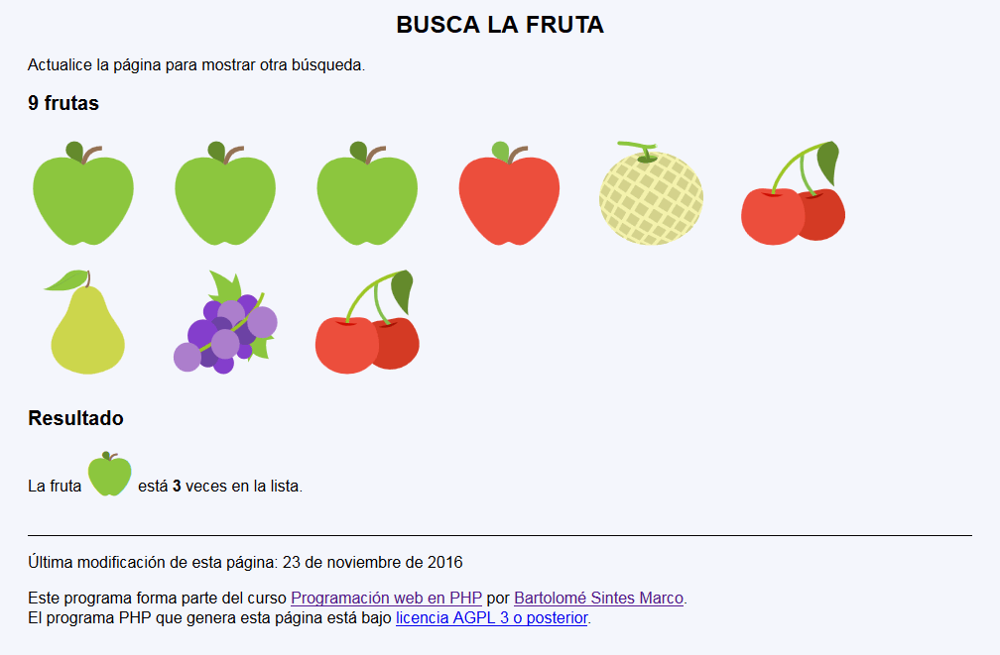

Busca la fruta - Ejemplo de programa
Nota: El día del examen los alumnos no tienen acceso a este ejemplo, solamente tienen acceso a las capturas del apartado anterior.
Un ejemplo de programa puede probarse en la ventana siguiente:
En este ejercicio se debe crear un programa que indique el número de veces que aparece una fruta en una colección de frutas.

<h1>Busca la fruta</h1>
<p>Actualice la página para mostrar otra búsqueda.</p>
<h2>9 frutas</h2>
<p style="font-size: 7rem; margin: 0;">
🍏
🍏
🍏
🍎
🍈
🍒
🍐
🍇
🍒
</p>
<h2>Resultado</h2>
<p>La fruta <span style="font-size: 3rem">🍏</span> está <strong>3</strong> veces en la lista.</p>
Nota: El día del examen los alumnos no tienen acceso a este ejemplo, solamente tienen acceso a las capturas del apartado anterior.
Un ejemplo de programa puede probarse en la ventana siguiente: